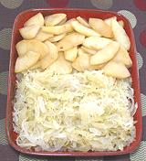

|
Sauerkraut with Apples & WineGermany / Südtirol (Italy) - Sauerkraut und Apfel n Weisswein | ||||
| Serves: Effort: Sched: DoAhead: |
8 side ** 1-1/4 hrs Yes |
Germans love sauerkraut, but so do Hungarians and everyone else in that region, including the people of Südtirol in the Italian Alps. There are, of course, endless variations, but this one, largely from the Südtirol, is typical, and very good. | |||
| Apples are often used to temper the sharpness of the sauerkraut. This Sauerkraut is very often served with sausages, separately simmered, fried or grilled, or with Potato Noodles. For a recipe better suited as a side to cuts of beef or veal, see Sauerkraut with Apples. | |||||
|
|
2 7 7 1/3 7 2 2-1/2 2 ------ 1-1/2 few ------ |
# oz t c c --- # --- |
Sauerkraut (1) Onion Juniper Berries Caraway seed Peppercorns Bay Leaves Wine, white (3) Water -- Apples Apples (2) Butter Cinnamon splinters -------- |
Prep - (10 min)
|